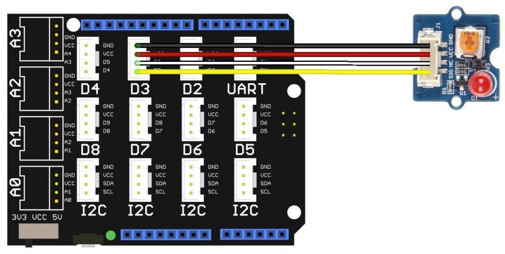

Séquence COLIBRI – Découverte Arduino et passage algorithme → programme
Le COLIBRI est une machine qui prépare et distribue des boissons chaudes à la demande. Son système interne doit indiquer visuellement qu'il est en fonctionnement.
Cahier des charges : allumer un voyant de signalisation de fonctionnement du COLIBRI.
La LED rouge joue le rôle du voyant de fonctionnement de la machine COLIBRI. 
Ressources utiles : Algorithmes / Algorigrammes – Ressource Arduino
On exécute les instructions les unes après les autres : Début → instructions → Fin.
Début
instruction1
instruction2
Fin
| Cahier des charges | Algorithme (pseudo-code) |
|---|---|
| Allumer un voyant de signalisation de fonctionnement du COLIBRI. |
Début Déclarer une variable représentant le voyant Mettre le voyant à l'état allumé Fin |
Représenter l'algorithme précédent sous forme d'algorigramme (Début, instruction « allumer voyant », Fin).
int ledrouge = 3; (broche numérique 3). digitalWrite(ledrouge, HIGH);. pinMode(ledrouge, OUTPUT);. Compléter les zones en pointillés dans le code ci‑dessous.
// Déclaration de la variable : la broche 3 s'appelle ledrouge
int ledrouge = 3; // <-- ligne donnée
void setup() {
// A faire : déclarer ledrouge comme une sortie
// pinMode( , );
}
void loop() {
// A faire : allumer la LED de fonctionnement
// digitalWrite( , );
}
Dans setup() : utiliser pinMode(ledrouge, OUTPUT); pour déclarer la broche comme sortie.
Dans loop() : utiliser digitalWrite(ledrouge, HIGH); pour allumer la LED.
int ledrouge = 3; // la broche 3 de la carte s'appelle ledrouge
void setup() {
pinMode(ledrouge, OUTPUT); // ledrouge est une sortie
}
void loop() {
digitalWrite(ledrouge, HIGH); // allumer le voyant de fonctionnement
}
Modifier le programme en supprimant la ligne int ledrouge = 3; et en remplaçant
partout dans le programme ledrouge par 3.
int ledrouge = 3; (nommer une broche avec une variable). Ressources : Structure d'un programme Arduino – Structures algorithmiques